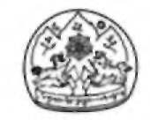
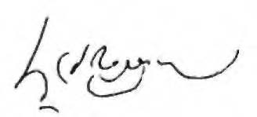

The Tibetan Book
of Living and Dying
SOGYAL RINPOCHE
Revised and Updated
Edited by
PATRICK GAFFNEY AND ANDREW HARVEY
« '
p e r f e c t sound
I WOULD LIKE TO DEDICATE THIS BOOK TO Jamyang Khyentse Chokyi Lodro, Dudjom Rinpoche, Dilgo Khyentse Rinpoche, Nyoshul Khen Rinpoche, Khyentse Sangyum Khandro Tsering Chodron, and all my beloved masters, who have been the inspiration of my life.
May this book be a guide to liberation, read by the living, and to the dying, and for the dead.
May it help all who read it and spur them on their journey to enlightenment!
Contents
Foreword, by His Holiness the Dalai Lama
Introduction to the Revised Edition
6. Evolution, Karma, and Rebirth 86
7. Bardos and Other Realities 106
8. This Life: The Natural Bardo 115
11. Heart Advice on Helping the Dying 177
12. Compassion: The Wish-Fulfilling Jewel 191
13. Spiritual Help for the Dying 213
14. The Practices for Dying 227
16. The Ground 263
20. The Near-Death Experience: A Staircase to Heaven? 323
Appendix 2: Questions About Death 378
Notes 399
Acknowledgments 419
Index 425

Foreword
by His Holiness the Dalai Lama
IN THIS TIMELY BOOK, Sogyal Rinpoche focuses on h o w to understand the true meaning of life, h o w to accept death, and h o w to help the dying, and the dead.
Death is a natural part of life, which we will all surely have to face sooner or later. To my mind, there are two ways we can deal with it while we are alive. We can either choose to ignore it or we can confront the prospect of our own death and, by thinking clearly about it, try to minimize the suffering that it can bring. However, in neither of these ways can we actually overcome it.
As a Buddhist, I view death as a normal process, a reality that I accept will occur as long as I remain in this earthly existence. Knowing that I cannot escape it, I see no point in worrying about it. I tend to think of death as being like changing your clothes when they are old and worn out, rather than as some final end. Yet death is unpredictable: We do not know when or h o w it will take place. So it is only sensible to take certain precautions before it actually happens.
Naturally, most of us would like to die a peaceful death, but it is also clear that we cannot hope to die peacefully if our lives have been full of violence, or if our minds have mostly been agitated by emotions like anger, attachment, or fear. So if we wish to die well, we must learn h o w to live well: Hoping for a peaceful death, we must cultivate peace in our mind, and in our way of life.
As you will read here, from the Buddhist point of view, the actual experience of death is very important. Although how or where we will be reborn is generally dependent on karmic forces, our state of mind at the time of death can influence the quality of our next rebirth. So at the moment of death, in spite of the great variety of karmas we have accumulated, if we make a special effort to generate a virtuous state of mind, we may strengthen and activate a virtuous karma, and so bring about a happy rebirth.

The actual point of death is also when the most profound and beneficial inner experiences can come about Through repeated acquaintance with the processes of death in meditation, an accomplished meditator can use his or her actual death to gain great spiritual realization. This is w h y experienced practitioners engage in meditative practices as they pass away An indication of their attainment is that often their bodies do not begin to decay until long after they are clinically dead.
No less significant than preparing for our own death is helping others to die well. As a newborn baby each of us was helpless and, without the care and kindness we received then, we would not have survived. Because the dying also are unable to help themselves, we should relieve them of discomfort and anxiety, and assist them, as far as we can, to die with composure.
Here the most important point is to avoid anything which will cause the dying person's mind to become more disturbed than it may already be. Our prime aim in helping a dying person is to put them at ease, and there are many ways of doing this. A dying person who is familiar with spiritual practice may be encouraged and inspired if they are reminded of it, but even kindly reassurance on our part can engender a peaceful, relaxed attitude in the dying person's mind.
Death and Dying provide a meeting point between the Tibetan Buddhist and modern scientific traditions. I believe both have a great deal to contribute to each other on the level of understanding and of practical benefit. Sogyal Binpoche is especially well placed to facilitate this meeting; having been born and brought up in the Tibetan tradition, he has received instructions from some of our greatest Lamas. Having also benefitted from a modern education and lived and worked as a teacher for many years in the West, he has become well acquainted with Western ways of thought.
This book offers readers not just a theoretical account of death and dying, but also practical measures for understanding, and for preparing themselves and others in a calm and fulfilling way.
June 2, 1992
The Dalai Lama
Introduction to the Revised Edition
IT is N O W TEN YEARS SINCE The Tibetan Book of Living and Dying was first published. In this book, I endeavored to share something of the wisdom of the tradition I grew up in. I sought to show the practical nature of its ancient teachings, and the ways in which they can help us at every stage of living and dying. Many people, over the years, had urged me to write this book. They said that it would help relieve some of the intense suffering that so many of us go through in the modern world. As His Holiness the Dalai Lama has pointed out, we are living in a society in which people find it harder and harder to show one another basic affection, and where any inner dimension to life is almost entirely overlooked. It is no wonder that there is today such a tremendous thirst for the compassion and wisdom that spiritual teachings can offer.
It must have been as a reflection of this need that The Tibetan Book of Living and Dying was received with such enthusiasm around the world. At first I was astonished: I had never expected it to have such an impact, especially since at the time of writing this book, death was still very much a subject that was shunned and ignored. Gradually, as I traveled to different countries, teaching and leading workshops and trainings based on the teachings in this book, I discovered the extent to which it had struck a chord in people's hearts. More and more individuals came up to me or wrote to tell me how these teachings had helped them through a crisis in their lives or supported them through the death of a loved one. And even though the teachings it contains may be unfamiliar, there are those who have told me they have read this book several times and keep returning to it as a source of inspiration. After reading The Tibetan Book of Living and Dying, a woman in Madras in India was so inspired that she founded a medical trust, with a hospice and palliative care center. Another person
in the United States came to me and said she was baffled by how a mere book could have, in her words, "loved her so completely." Stories like these, so moving and so personal, tes-tify to the power and relevance of the Buddhist teachings today. Whenever I hear them, my heart fills with gratitude, both to the teachings themselves and to the teachers and practitioners who have undergone so much in order to embody them and hand them on.
In time, I came to learn that The Tibetan Book of Living and Dying had been adopted by institutions, centers, and groups of various kinds, educational, medical, and spiritual. Nurses, doctors, and those professionally involved with care for the dying have told me how they have integrated these methods in their daily work, and I have heard many accounts of ordinary people using these practices and finding that they transformed the death of a friend or close relative. Something I find especially moving is that this book has been read by people with different spiritual beliefs, and they have said that it has strengthened and deepened their faith in their own tradition. They seem to recognize the universality of its message, and understand that it aims not to persuade or convert, but simply to offer the wisdom of the ancient Buddhist teachings in order to bring the maximum possible benefit.
As The Tibetan Book of Living and Dying quietly took on a life of its own, moving inconspicuously through many domains and disciplines, I began to understand the ultimate source of its great influence and appeal. These extraordinary teachings are the heart essence of the oral lineage, that unbroken line of wisdom passed down as a living experience over the centuries. Someone once called this book "midway between a living master and a book," and it is true that both in The Tibetan Book of Living and Dying and behind it, supporting it with their advice and answers to questions, are the greatest masters of our time. It is their voice that speaks through these pages, their wisdom and their vision of a compassionate world infused by the knowledge of our true nature, the innermost nature of mind. The impact of The Tibetan Book of Living and Dying, I believe, is due to the blessing of the lineage and the vibrancy of the oral tradition. Its popularity has been a humbling experience for me, and it has reminded me that if I have any ability to communicate these teachings, it is only because of the devotion inspired in me by the teachings and the kindness of my masters, and nothing else.
Over these last ten years there have been many changes in INTRODUCTION
our attitudes toward death and in the kind of care we as a society offer to the dying and the bereaved. Public awareness of death and the many issues surrounding dying has been heightened. Books, Web sites, conferences, serious radio and television series, films, and support groups have all contributed to a greater openness toward looking into death. There has been a considerable expansion in hospice work and palliative care, and this has been the period during which, in some countries, the whole field of care for the dying has been opened up. Initiatives of many kinds have taken place, inspired by courageous men and women, for whom I have the greatest respect and admiration. Meanwhile, there have been more and more requests for those working in the Buddhist tradition to take part in projects and explore how they can contribute.
A number of my friends and students have gradually created an international program of education and training based on the teachings in this book and designed to offer spiritual care to the dying, their families, and those who care for them.
We offer courses for the medical profession and the public, coordinate volunteers, and have begun to work hand in hand with hospitals, clinics, hospices, and universities. What is encouraging is that there is a growing recognition everywhere that spiritual issues are central to the care of the dying, and in some countries a number of medical schools now offer courses in spirituality and medicine. Yet, I am told, surveys show that denial of death still prevails, and we are still lacking in our ability to offer spiritual help and care for the dying and answer their deepest needs. The kind of death we have is so important. Death is the most crucial moment of our lives, and each and every one of us should be able to die in peace and fulfillment, knowing that we will be surrounded by the best in spiritual care.
If The Tibetan Book of Living and Dying has played some small part in helping us look at how we deal with our own death and that of those around us, it is an answer to my prayers, and I am deeply moved and grateful. It is still my dream that the teachings presented here be made available to people everywhere, of all ages, and at all levels of education.
My original hope for this book was that it would help inspire a quiet revolution in the whole way we look at death and care for the dying, and so the whole way we look at life and care for the living. Our need for spiritual transformation and to take responsibility, in the truest sense, for ourselves and others
has not become any less urgent these ten years on. What would it mean if more and more people thought seriously about their future and the future of the world? Imagine how things would be if we could live our lives infusing them with a sacred meaning; if our end-of-life care were always lit by a sense of awe in the face of death; and if we looked on life and death themselves as an inseparable whole. What would be the effect of seeking to make love and compassion the measure of our every action, and of understanding, to any degree, the inmost nature of the mind that underlies our entire existence? This would be a true revolution, one that would free men and women to discover their birthright, that inner dimension so long neglected, and unite them with the fullness of the human experience in all its mystery and grandeur.
Sogyal Rinpoche
Lerab Ling, France
November 2001
Preface
I WAS BORN IN TIBET, and I was six months
old when I entered the monastery of my master Jamyang Khyentse Chokyi Lodro, in the province of Kham. In Tibet we have a unique tradition of finding the reincarnations of great masters who have passed away. They are chosen young and given a special education to train them to become the teachers of the future. I was given the name Sogyal, even though it was only later that my master recognized me as the incarnation of Terton Sogyal, a renowned mystic who was one of his own teachers and a master of the Thirteenth Dalai Lama.
My master, Jamyang Khyentse, was tall for a Tibetan, and he always seemed to stand a good head above others in a crowd. He had silver hair, cut very short, and kind eyes that glowed with humor. His ears were long, like those of the Buddha. But what you noticed most about him was his presence.
His glance and bearing told you that he was a wise and holy man. He had a rich, deep, enchanting voice, and when he taught his head would tilt slightly backward and the teaching would flow from him in a stream of eloquence and poetry.
And for all the respect and even awe he commanded, there was humility in everything he did.
Jamyang Khyentse is the ground of my life, and the inspiration of this book. He was the incarnation of a master who had transformed the practice of Buddhism in our country. In Tibet it was never enough simply to have the name of an incarnation, you always had to earn respect, through your learning and through your spiritual practice. My master spent years in retreat, and many miraculous stories are told about him. He had profound knowledge and spiritual realization, and I came to discover that he was like an encyclopedia of wisdom, and knew the answer to any question you might ask him. There were many spiritual traditions in Tibet, but Jamyang Khyentse was acclaimed as the authority on them all.
He was, for everyone who knew or heard about him, the embodiment of Tibetan Buddhism, a living proof of how someone who had realized the teachings and completed their practice would be.
I have heard that my master said that I would help continue his work, and certainly he always treated me like his own son. I feel that what I have been able to achieve now in my work, and the audience I have been able to reach, is a ripening of the blessing he gave me.
All my earliest memories are of him. He was the environment in which I grew up, and his influence dominated my childhood. He was like a father to me. He would grant me anything I asked. His spiritual consort, Khandro Tsering Chodron, who is also my aunt, used to say: "Don't disturb Rinpoche, he might be busy,"1 but I would always want to be there next to him, and he was happy to have me with him.
I would pester him with questions all the time, and he always answered me patiently. I was a naughty child; none of my tutors were able to discipline me. Whenever they tried to beat me, I would run to my master and climb up behind him, where no one would dare to go. Crouching there, I felt proud and pleased with myself; he would just laugh.
Then one day, without my knowledge, my tutor pleaded with him, explaining that for my own benefit this could not go on. The next time I fled to hide, my tutor came into the room, did three prostrations to my master, and dragged me out. I remember thinking, as I was hauled out of the room, how strange it was that he did not seem to be afraid of my master.
Jamyang Khyentse used to live in the room where his previous incarnation had seen his visions and launched the renais-sance of culture and spirituality that swept through eastern Tibet in the last century. It was a wonderful room, not particularly large but with a magical atmosphere, full of sacred objects, paintings, and books. They called it "the heaven of the buddhas," "the room of empowerment," and if there is one place that I remember in Tibet, it is that room. My master sat on a low seat made of wood and strips of leather, and I sat next to him. I would refuse to eat if it was not from his bowl.
In the small bedroom close by, there was a veranda, but it was always quite dark, and there was always a kettle with tea bubbling away on a little stove in the comer. Usually I slept
next to my master, on a small bed at the foot of his own. One sound I shall never forget is the clicking of the beads of his mala, his Buddhist rosary, as he whispered his prayers. When I went to sleep he would be there, sitting and practicing; and when I awoke in the morning he would already be awake and sitting and practicing again, overflowing with blessing and power. As I opened my eyes and saw him, I would be filled with a warm and cozy happiness. He had such an air of peace about him.
As I grew older, Jamyang Khyentse would make me preside over ceremonies, while he took the part of chant leader. I was witness to all the teachings and initiations that he gave to others; but rather than the details, what I remember now is the atmosphere. For me he was the Buddha, of that there was no question in my mind. And everyone else recognized it as well.
When he gave initiations, his disciples were so overawed they hardly dared look into his face. Some would see him actually in the form of his predecessor, or as different buddhas and bodhisattvas.2 Everyone called him Rinpoche, "the Precious One,"
which is the tide given to a master, and when he was present no other teacher would be addressed in that way. His presence was so impressive that many affectionately called him
"the Primordial Buddha."3
Had I not met my master Jamyang Khyentse, I know I would have been an entirely different person. With his warmth and wisdom and compassion, he personified the sacred truth of the teachings and so made them practical and vibrant with life. Whenever I share that atmosphere of my master with others, they can sense the same profound feeling it aroused in me. What then did Jamyang Khyentse inspire in me? An unshakable confidence in the teachings, and a conviction in the central and dramatic importance of the master.
Whatever understanding I have, I know I owe it to him. This is something I can never repay, but I can pass on to others.
Throughout my youth in Tibet I saw the kind of love Jamyang Khyentse used to radiate in the community, especially in guiding the dying and the dead. A lama in Tibet was not only a spiritual teacher but also wise man, therapist, parish priest, doctor, and spiritual healer, helping the sick and the dying. Later I was to learn the specific techniques for guiding the dying and the dead from the teachings connected with the Tibetan Book of the Dead. But the greatest lessons I ever learned about death—and life—came from watching my master as he
guided dying people with infinite compassion, wisdom, and understanding.
I pray this book will transmit something of his great wisdom and compassion to the world, and, through it, you too, wherever you are, can come into the presence of his wisdom mind and find a living connection with him.
PART ONE
Living
ONE
In the Mirror of Death
MY OWN FIRST EXPERIENCE of death came when I
was about seven. We were preparing to leave the eastern highlands to travel to central Tibet. Samten, one of the personal attendants of my master, was a wonderful monk who was kind to me during my childhood. He had a bright, round, chubby face, always ready to break into a smile. He was everyone's favorite in the monastery because he was so good-natured. Every day my master would give teachings and initiations and lead practices and rituals. Toward the end of the day, I would gather together my friends and act out a little theatrical performance, reenacting the morning's events. It was Samten who would always lend me the costumes my master had worn in the morning. He never refused me.
Then suddenly Samten fell ill, and it was clear he was not going to live. We had to postpone our departure. I will never forget the two weeks that followed. The rank smell of death hung like a cloud over everything, and whenever I think of that time, that smell comes back to me. The monastery was saturated with an intense awareness of death. This was not at all morbid or frightening, however; in the presence of my master, Samten's death took on a special significance. It became a teaching for us all.
Samten lay on a bed by the window in a small temple in my master's residence. I knew he was dying. From time to time I would go in and sit by him. He could not talk, and I was shocked by the change in his face, which was now so haggard and drawn. I realized that he was going to leave us and we would never see him again. I felt intensely sad and lonely.
Samten's death was not an easy one. The sound of his labored breathing followed us everywhere, and we could smell his body decaying. The monastery was overwhelmingly silent except for this breathing. Everything focused on Samten. Yet 3
4 THE TIBETAN BOOK OF LIVING AND DYING
although there was so much suffering in Samten's prolonged dying, we could all see that deep down he had a peace and inner confidence about him. At first I could not explain this, but then I realized what it came from: his faith and his training, and the presence of our master. And though I felt sad, I knew then that if our master was there, everything would turn out all right, because he would be able to help Samten toward liberation. Later I came to know that it is the dream of any practitioner to die before his master and have the good fortune to be guided by him through death.
As Jamyang Khyentse guided Samten calmly through his dying, he introduced him to all the stages of the process he was going through, one by one. I was astonished by the precision of my master's knowledge, and by his confidence and peace. When my master was there, his peaceful confidence would reassure even the most anxious person. Now Jamyang Khyentse was revealing to us his fearlessness of death. Not that he ever treated death lightly: He often told us that he was afraid of it, and warned us against taking it naively or complacently. Yet what was it that allowed my master to face death in a way that was at once so sober and so fighthearted, so practical yet so mysteriously carefree? That question fascinated and absorbed me.
Samten's death shook me. At the age of seven, I had my first glimpse of the vast power of the tradition I was being made part of, and I began to understand the purpose of spiritual practice. Practice had given Samten an acceptance of death, as well as a clear understanding that suffering and pain can be part of a deep, natural process of purification. Practice had given my master a complete knowledge of what death is, and a precise technology for guiding individuals through it.
After Samten died we set off for Lhasa, the capital of Tibet, a tortuous three-month journey on horseback. From there we continued our pilgrimage to the sacred sites of central and southern Tibet. These are the holy places of the saints, kings, and scholars who brought Buddhism to Tibet from the seventh century onward. My master was the emanation of many masters of all traditions, and because of his reputation he was given a tumultuous reception everywhere we went.
For me that journey was extremely exciting, and has remained full of beautiful memories. Tibetans rise early, in order to make use of all the natural light. We would go to bed IN THE MIRROR OF DEATH 5
at dusk and rise before daybreak, and by first light the yaks carrying the baggage would be moving out. The tents would be struck, and the last ones to come down were the kitchen and my master's tent. A scout would go ahead to choose a good camping place, and we would stop and camp around noon for the rest of the day. I used to love to camp by a river and listen to the sound of the water, or to sit in the tent and hear the rain pattering on the roof.
We were a small party with about thirty tents in all. During the day I rode on a golden-colored horse next to my master.
While we rode he gave teachings, told stories, practiced, and composed a number of practices specially for me. One day, as we drew near the sacred lake of Yamdrok Tso, and caught sight of the turquoise radiance of its waters, another Lama in our party, Lama Tseten, began to die.
The death of Lama Tseten proved another strong teaching for me. He was the tutor to my master's spiritual wife, Khandro Tsering Chodron, who is still alive today. She is regarded by many as Tibet's foremost woman practitioner, a hidden master who for me is an embodiment of devotion, teaching through the simplicity of her loving presence. Lama Tseten was an immensely human and grandfatherly character.
He was over sixty, quite tall and with gray hair, and exuded an effortless gentleness. He was also a highly accomplished practitioner of meditation, and just to be near him used to give me a sense of peace and serenity. Sometimes he would scold me, and I would be afraid of him; but for all his occasional sternness, he never lost his warmth.
Lama Tseten died in an extraordinary way. Although there was a monastery close by, he refused to go there, saying he did not want to leave a corpse for them to clear up. So we camped and pitched our tents in a circle as usual. Khandro was nursing and caring for Lama Tseten, as he was her tutor.
She and I were the only two people in his tent when he suddenly called her over. He had an endearing way of calling her
"A-mi," meaning "my child" in his local dialect. "A-mi," he said tenderly, "come here. It's happening now. I've no further advice for you. You are fine as you are: I am happy with you.
Serve your master just as you have been doing."
Immediately she turned to run out of the tent, but he caught her by the sleeve. "Where are you going?" he asked.
"I'm going to call Rinpoche," she replied.
"Don't bother him, there's no need," he smiled. "With the master, there's no such thing as distance." With that, he just 6 THE TIBETAN BOOK OF LIVING AND DYING
gazed up into the sky and passed away. Khandro released herself from his grip and rushed out to call my master. I sat there, unable to move.
I was amazed that anyone who was staring into the face of death could have that kind of confidence. Lama Tseten could have had his Lama there in person to help him—something anyone else would have longed for—but he had no need. I understand why now: He had already realized the presence of the master within himself. Jamyang Khyentse was there with him always, in his mind and heart; never for one moment did he feel any separation.
Khandro did go to fetch Jamyang Khyentse.1 I shall never forget how he stooped to enter the tent. He gave one look at Lama Tseten's face, and then, peering into his eyes, began to chuckle. He always used to call him "La Gen," "old Lama"; it was a sign of his affection. "La Gen," he said, "don't stay in that state!" He could see, I now understand, that Lama Tseten was doing one particular practice of meditation in which the practitioner merges the nature of his mind with the space of truth and can remain in that state for many days as he dies.
"La Gen, we are travelers. We're pilgrims. We don't have the time to wait that long. Come on. I'll guide you."
Transfixed, I watched what happened next, and if I hadn't seen it myself I would never have believed it. Lama Tseten came back to life. Then my master sat by his side and took him through the phowa, the practice for guiding the consciousness at the moment before death. There are many ways of doing this practice, and the one he used then culminated with the master uttering the syllable "A" three times. As my master declared the first "A," we could hear Lama Tseten accompany-ing him quite audibly. The second time his voice was less distinct, and the third time it was silent; he had gone.
The death of Samten taught me the purpose of spiritual practice; Lama Tseten's death taught me that it is not unusual for practitioners of his caliber to conceal their remarkable qualities during their lifetime. Sometimes, in fact, they show them only once, at the moment of death. I understood, even as a child, that there was a striking difference between the death of Samten and that of Lama Tseten, and I realized that it was the difference between the death of a good monk who had practiced in his life and that of a much more realized practitioner.
Samten died in an ordinary way and in pain, yet with the confidence of faith; Lama Tseten's death was a display of spiritual mastery.
IN THE MIRROR OF DEATH 7
Soon after Lama Tseten's funeral, we moved up into the monastery of Yamdrok. As usual, I slept next to my master in his room, and I remember that night watching the shadows of the butter lamps flickering on the wall. While everyone else slept soundly, I lay awake and cried the whole night long. I understood that night that death is real, and that I too would have to die. As I lay there, thinking about death and about my own death, through all my sadness a profound sense of acceptance began slowly to emerge, and with it a resolve to dedicate my life to spiritual practice.
So I began to face death and its implications very young. I could never have imagined then how many kinds of death there were to follow, one heaped upon another. The death that was the tragic loss of my country, Tibet, after the Chinese occupation. The death that is exile. The death of losing everything my family and I possessed. My family, Lakar Tsang, had been among the wealthiest in Tibet. Since the fourteenth century it had been famous as one of the most important bene-factors of Buddhism, supporting the teaching of Buddha and helping the great masters with their work.2
The most shattering death of all was yet to come—that of my master Jamyang Khyentse. Losing him I felt I had lost the ground of my existence. It was in 1959, the year of the fall of Tibet. For the Tibetans, my master's death was a second devastating blow. And for Tibet, it marked the end of an era.
DEATH IN THE MODERN WORLD
When I first came to the West, I was shocked by the contrast between the attitudes to death I had been brought up with and those I now found. For all its technological achievements, modern Western society has no real understanding of death or what happens in death or after death.
I learned that people today are taught to deny death, and taught that it means nothing but annihilation and loss. That means that most of the world lives either in denial of death or in terror of it. Even talking about death is considered morbid, and many people believe that simply mentioning death is to risk wishing it upon ourselves.
Others look on death with a naive, thoughtless cheerful-ness, thinking that for some unknown reason death will work out all right for them, and that it is nothing to worry about.
When I think of them, I am reminded of what one Tibetan master says: "People often make the mistake of being frivolous 8 THE TIBETAN BOOK OF LIVING AND DYING
about death and think, 'Oh well, death happens to everybody.
It's not a big deal, it's natural. I'll be fine.' That's a nice theory until one is dying."3
Of these two attitudes toward death, one views death as something to scurry away from and the other as something that will just take care of itself. How far they both are from understanding death's true significance!
All the greatest spiritual traditions of the world, including of course Christianity, have told us clearly that death is not the end. They have all handed down a vision of some sort of life to come, which infuses this life that we are leading now with sacred meaning. But despite their teachings, modern society is largely a spiritual desert where the majority imagine that this life is all that there is. Without any real or authentic faith in an afterlife, most people live lives deprived of any ultimate meaning.
I have come to realize that the disastrous effects of the denial of death go far beyond the individual: They affect the whole planet. Believing fundamentally that this life is the only one, modern people have developed no long-term vision. So there is nothing to restrain them from plundering the planet for their own immediate ends and from living in a selfish way that could prove fatal for the future. How many more warn-ings do we need, like this one from the former Brazilian Minister for the Environment, responsible for the Amazon rain forest?
Modern industrial society is a fanatical religion. We are demolishing, poisoning, destroying all life-systems on the planet. We are signing bills our children will not be able to pay. We are acting as if we were the last generation on the planet. Without a radical change in heart, in mind, in vision, the earth will end up like Venus, charred and dead.A
Fear of death and ignorance of the afterlife are fueling that destruction of our environment that is threatening all of our lives. So isn't it all the more disturbing that people are not taught what death is, or how to die? Or given any hope in what lies after death, and so what really lies behind life?
Could it be more ironic that young people are so highly educated in every subject except the one that holds the key to the entire meaning of life, and perhaps to our very survival?
It has often intrigued me how some Buddhist masters I know ask one simple question of people who approach them IN THE MIRROR OF DEATH 9
for teaching: Do you believe in a life after this one? They are not being asked whether they believe in it as a philosophical proposition, but whether they feel it deeply in their heart. The master knows that if people believe in a life after this one, their whole outlook on life will be different, and they will have a distinct sense of personal responsibility and morality.
What the masters must suspect is that there is a danger that people who have no strong belief in a life after this one will create a society fixated on short-term results, without much thought for the consequences of their actions. Could this be the major reason why we have created a brutal world like the one in which we are now living, a world with little real compassion?
Sometimes I think that the most affluent and powerful countries of the developed world are like the realm of the gods described in the Buddhist teachings. The gods are said to live lives of fabulous luxury, reveling in every conceivable pleasure, without a thought for the spiritual dimension of life. All seems to go well until death draws near and unexpected signs of decay appear. Then the gods' wives and lovers no longer dare approach them, but throw flowers to them from a distance, with casual prayers that they be reborn again as gods.
None of their memories of happiness or comfort can shelter them now from the suffering they face; they only make it more savage. So the dying gods are left to die alone in misery.
The fate of the gods reminds me of the way the elderly, the sick, and the dying are treated today. Our society is obsessed with youth, sex, and power, and we shun old age and decay. Isn't it terrifying that we discard old people when their working life is finished and they are no longer useful?
Isn't it disturbing that we cast them into old people's homes, where they die lonely and abandoned?
Isn't it time also that we took another look at how we sometimes treat those suffering with terminal illnesses like cancer and AIDS? I know a number of people who have died from AIDS, and I have seen how often they were treated as outcasts, even by their friends, and how the stigma attached to the disease reduced them to despair, and made them feel their life was disgusting and had in the eyes of the world already ended.
Even when a person we know or love is dying, so often people find they are given almost no idea of how to help them; and when they are dead, we are not encouraged to give any thought to the future of the dead person, how he or she 10 THE TIBETAN BOOK OF LIVING AND DYING
will continue, or how we could go on helping him or her. In fact, any attempt to think along these lines risks being dismissed as nonsensical and ridiculous.
What all of this is showing us, with painful clarity, is that now more than ever before we need a fundamental change in our attitude toward death and dying.
Happily, attitudes are beginning to change. The hospice movement, for example, is doing marvelous work in giving practical and emotional care. Yet practical and emotional care are not enough; people who are dying need love and care, but they also need something even more profound. They need to discover a real meaning to death, and to life. Without that, how can we give them ultimate comfort? Helping the dying, then, must include the possibility of spiritual care, because it is only with spiritual knowledge that we can truly face, and understand, death.
I have been heartened by the way in which in recent years the whole subject of death and dying has been opened up in the West by pioneers such as Elisabeth Kubler-Ross and Raymond Moody. Looking deeply into the way that we care for the dying, Elisabeth Kubler-Ross has shown that with unconditional love, and a more enlightened attitude, dying can be a peaceful, even transformative experience. The scientific studies of the many different aspects of the near-death experience that followed the brave work of Raymond Moody have held out to humanity a vivid and strong hope that life does not end with death, and there is indeed a "life after life."
Some, unfortunately did not really understand the full meaning of these revelations about death and dying. They went to the extreme of glamorizing death, and I have heard of tragic cases of young people who committed suicide because they believed death was beautiful and an escape from the depression of their lives. But whether we fear death and refuse to face it, or whether we romanticize it, death is trivialized.
Both despair and euphoria about death are an evasion. Death is neither depressing nor exciting; it is simply a fact of life.
How sad it is that most of us only begin to appreciate our life when we are on the point of dying. I often think of the words of the great Buddhist master Padmasambhava: "Those who believe they have plenty of time get ready only at the time of death. Then they are ravaged by regret. But isn't it far too late?" What more chilling commentary on the modern world could there be than that most people die unprepared for death, as they have lived, unprepared for life?
IN THE MIRROR OF DEATH 11
THE JOURNEY THROUGH LIFE AND DEATH
According to the wisdom of Buddha, we can actually use our lives to prepare for death. We do not have to wait for the painful death of someone close to us or the shock of terminal illness to force us into looking at our lives. Nor are we condemned to go out empty-handed at death to meet the unknown. We can begin, here and now, to find meaning in our lives. We can make of every moment an opportunity to change and to prepare—wholeheartedly, precisely, and with peace of mind—for death and eternity.
In the Buddhist approach, life and death are seen as one whole, where death is the beginning of another chapter of life.
Death is a mirror in which the entire meaning of life is reflected.
This view is central to the teachings of the most ancient school of Tibetan Buddhism. Many of you will have heard of the Tibetan Book of the Dead. What I am seeking to do in this book is to explain and expand the Tibetan Book of the Dead, to cover not only death but life as well, and to fill out in detail the whole teaching of which the Tibetan Book of the Dead is only a part. In this wonderful teaching, we find the whole of life and death presented together as a series of constantly changing transitional realities known as bardos. The word
"bardo" is commonly used to denote the intermediate state between death and rebirth, but in reality bardos are occurring continuously throughout both life and death, and are junctures when the possibility of liberation, or enlightenment, is heightened.
The bardos are particularly powerful opportunities for liberation because there are, the teachings show us, certain moments that are much more powerful than others and much more charged with potential, when whatever you do has a crucial and far-reaching effect. I think of a bardo as being like a moment when you step toward the edge of a precipice; such a moment, for example, is when a master introduces a disciple to the essential, original, and innermost nature of his or her mind. The greatest and most charged of these moments, however, is the moment of death.
So from the Tibetan Buddhist point of view, we can divide our entire existence into four continuously interlinked realities: (1) life, (2) dying and death, (3) after death, and (4) rebirth.
These are known as the four bardos: (1) the natural bardo of this life, (2) the painful bardo of dying, (3) the luminous bardo of dharmata, and (4) the karmic bardo of becoming.
12 THE TIBETAN BOOK OF LIVING AND DYING
Because of the vastness and all-comprehensiveness of the bardo teachings, this book has been carefully structured. You will be guided, stage by stage, through the unfolding vision of the journey through life and death. Our exploration necessarily begins with a direct reflection on what death means and the many facets of the truth of impermanence—the kind of reflection that can enable us to make rich use of this life while we still have time, and ensure that when we die it will be without remorse or self-recrimination at having wasted our lives.
As Tibet's famous poet saint, Milarepa, said: "My religion is to live—and die—without regret."
Contemplating deeply on the secret message of impermanence—what lies in fact beyond impermanence and death—
leads directly to the heart of the ancient and powerful Tibetan teachings: the introduction to the essential "nature of mind."
Realization of the nature of mind, which you could call our innermost essence, that truth we all search for, is the key to understanding life and death. For what happens at the moment of death is that the ordinary mind and its delusions die, and in that gap the boundless sky-like nature of our mind is uncovered. This essential nature of mind is the background to the whole of life and death, like the sky, which folds the whole universe in its embrace.
The teachings make it clear that if all we know of mind is the aspect of mind that dissolves when we die, we will be left with no idea of what continues, no knowledge of the new dimension of the deeper reality of the nature of mind. So it is vital for us all to familiarize ourselves with the nature of mind while we are still alive. Only then will we be prepared when it reveals itself spontaneously and powerfully at the moment of death; be able to recognize it "as naturally," the teachings say, "as a child running into its mother's lap"; and by remaining in that state, finally be liberated.
A description of the nature of mind leads naturally into a complete instruction on meditation, for meditation is the only way we can repeatedly uncover and gradually realize and stabilize that nature of mind. An explanation will then be given of the nature of human evolution, rebirth, and karma, so as to provide you with the fullest possible meaning and context of our path through life and death.
By this point you will have enough knowledge to be able to enter confidently the heart of the book: a comprehensive account, drawn from many different sources, of all of the four bardos and of all of the different stages of death and dying.
IN THE MIRROR OF DEATH 13
Instruction, practical advice, and spiritual practices are set out in detail for helping both ourselves and others through life, through dying, through death, and after death. The book then concludes with a vision of how the bardo teachings can help us understand the deepest nature of the human mind, and of the universe.
My students often ask me: How do we know what these bardos are, and from where does the astonishing precision of the bardo teachings and their uncannily clear knowledge of each stage of dying, death, and rebirth come? The answer may seem initially difficult to understand for many readers, because the notion of mind the West now has is an extremely narrow one. Despite the major breakthroughs of recent years, especially in mind/body science and transpersonal psychology, the great majority of scientists continue to reduce the mind to no more than physical processes in the brain, which goes against the testimony of thousands of years of experience of mystics and meditators of all religions.
From what source or authority, then, can a book like this be written? The "inner science" of Buddhism is based, as one American scholar puts it, "on a thorough and comprehensive knowledge of reality, on an already assessed, depth understanding of self and environment; that is to say, on the complete enlightenment of the Buddha."5 The source of the bardo teachings is the enlightened mind, the completely awake buddha mind, as experienced, explained, and transmitted by a long line of masters that stretches back to the Primordial Buddha. Their careful, meticulous—you could almost say scientific—explorations and formulations of their discoveries of mind over many centuries have given us the most complete picture possible of both life and death. It is this complete picture that, inspired by Jamyang Khyentse and all my other great masters, I am humbly attempting to transmit for the very first time to the West.
Over many years of contemplation and teaching and practice, and clarifying questions with my masters, I have written The Tibetan Book of Living and Dying as the quintessence of the heart-advice of all my masters, to be a new Tibetan Book of the Dead and a Tibetan Book of Life. I want it to be a manual, a guide, a work of reference, and a source of sacred inspiration.
Only by going over this book and reading it again and again, I suggest, can its many layers of meaning be revealed. The more 14 THE TIBETAN BOOK OF LIVING AND DYING
you use it, you will find, the more profoundly you will feel its implications, and the more you will come to realize the depth of the wisdom that is being transmitted to you through the teachings.
The bardo teachings show us precisely what will happen if we prepare for death and what will happen if we do not. The choice could not be clearer. If we refuse to accept death now, while we are still alive, we will pay dearly throughout our lives, at the moment of death, and thereafter. The effects of this refusal will ravage this life and all the lives to come. We will not be able to live our lives fully; we will remain imprisoned in the very aspect of ourselves that has to die. This ignorance will rob us of the basis of the journey to enlightenment, and trap us endlessly in the realm of illusion, the uncontrolled cycle of birth and death, that ocean of suffering that we Buddhists call samsara.6
Yet the fundamental message of the Buddhist teachings is that if we are prepared, there is tremendous hope, both in life and in death. The teachings reveal to us the possibility of an astounding and finally boundless freedom, which is ours to work for now, in life—the freedom that will also enable us to choose our death and so to choose our birth. For someone who has prepared and practiced, death comes not as a defeat but as a triumph, the crowning and most glorious moment of life.
TWO
Impermanence
There is no place on earth where death cannot find us— even if we constantly twist our heads about in all directions as in a dubious and suspect land. If there were any way of sheltering from death's blows— I am not the man to recoil from it. But it is madness to think that you can succeed.
Men come and they go and they trot and they dance, and never a word about death. All well and good. Yet when death does come— to them, their wives, their children, their friends— catching them unawares and unprepared, then what storms of passion overwhelm them, what cries, what fury, what despair!
To begin depriving death of its greatest advantage over us, let us adopt a way clean contrary to that common one; let us deprive death of its strangeness, let us frequent it, let us get used to it; let us have nothing more often in mind than death. We do not know where death awaits us: so let us wait for it everywhere. To practice death is to practice freedom. A man who has learned how to die has unlearned how to be a slave.
MONTAIGNE1
WHY IS IT SO VERY HARD to practice death and to practice freedom? And why exactly are we so frightened of death that we avoid looking at it altogether? Somewhere, deep down, we know we cannot avoid facing death forever.
We know, in Milarepa's words, "This thing called 'corpse' we dread so much is living with us here and now." The longer we postpone facing death, the more we ignore it, the greater the fear and insecurity that build up to haunt us. The more we try to run away from that fear, the more monstrous it becomes.
Death is a vast mystery, but there are two things we can say about it: It is absolutely certain that we will die, and it is uncertain when or how we will die. The only surety we have, then, is 15
16 THE TIBETAN BOOK OF LIVING AND DYING
this uncertainty about the hour of our death, which we seize on as the excuse to postpone facing death directly. We are like children who cover their eyes in a game of hide-and-seek and think that no one can see them.
Why do we live in such terror of death? Because our instinctive desire is to live and to go on living, and death is a savage end to everything we hold familiar. We feel that when it comes we will be plunged into something quite unknown, or become someone totally different. We imagine we will find ourselves lost and bewildered, in surroundings that are terrifyingly unfamiliar. We imagine it will be like waking up alone, in a torment of anxiety, in a foreign country, with no knowledge of the land or language, no money, no contacts, no pass-port, no friends.
Perhaps the deepest reason why we are afraid of death is because we do not know who we are. We believe in a personal, unique, and separate identity; but if we dare to examine it, we find that this identity depends entirely on an endless collection of things to prop it up: our name, our "biography,"
our partners, family, home, job, friends, credit cards . . . It is on their fragile and transient support that we rely for our security.
So when they are all taken away, will we have any idea of who we really are?
Without our familiar props, we are faced with just ourselves, a person we do not know, an unnerving stranger with whom we have been living all the time but we never really wanted to meet. Isn't that why we have tried to fill every moment of time with noise and activity, however boring or trivial, to ensure that we are never left in silence with this stranger on our own?
And doesn't this point to something fundamentally tragic about our way of life? We live under an assumed identity, in a neurotic fairy tale world with no more reality than the Mock Turtle in Alice in Wonderland. Hypnotized by the thrill of building, we have raised the houses of our lives on sand. This world can seem marvelously convincing until death collapses the illusion and evicts us from our hiding place. What will happen to us then if we have no clue of any deeper reality?
When we die we leave everything behind, especially this body we have cherished so much and relied upon so blindly and tried so hard to keep alive. But our minds are no more dependable than our bodies. Just look at your mind for a few minutes. You will see that it is like a flea, constantly hopping to and fro. You will see that thoughts arise without any rea-IMPERMANENCE 17
son, without any connection. Swept along by the chaos of every moment, we are the victims of the fickleness of our mind. If this is the only state of consciousness we are familiar with, then to rely on our minds at the moment of death is an absurd gamble.
THE GREAT DECEPTION
The birth of a man is the birth of his sorrow. The longer he lives, the more stupid he becomes, because his anxiety to avoid unavoidable death becomes more and more acute. What bitterness! He lives for what is always out of reach! His thirst for survival in the future makes him incapable of living in the present.
CHUANG TZU
After my master died, I enjoyed a close connection with Dudjom Rinpoche, one of the greatest meditation masters, mystics, and yogins of recent times. One day he was driving through France with his wife, admiring the countryside as they went along. They passed a long cemetery, which had been freshly painted and decorated with flowers. Dudjom Rinpoche's wife said, "Rinpoche, look how everything in the West is so neat and clean. Even the places where they keep corpses are spodess. In the East not even the houses that people live in are anything like as clean as this."
"Ah, yes," he replied, "that's true; this is such a civilized country. They have such marvelous houses for dead corpses.
But haven't you noticed? They have such wonderful houses for the living corpses too."
Whenever I think of this story, it makes me think how hollow and futile life can be when it's founded on a false belief in continuity and permanence. When we live like that, we become, as Dudjom Rinpoche said, unconscious, living corpses.
Most of us do live like that; we live according to a pre-ordained plan. We spend our youth being educated. Then we find a job, and meet someone, marry, and have children. We buy a house, try to make a success of our business, aim for dreams like a country house or a second car. We go away on holiday with our friends. We plan for retirement. The biggest dilemmas some of us ever have to face are where to take our next holiday or whom to invite at Christmas. Our lives are monotonous, petty, and repetitive, wasted in the pursuit of the trivial, because we seem to know of nothing better.
18 THE TIBETAN BOOK OF LIVING AND DYING
The pace of our lives is so hectic that the last thing we have time to think of is death. We smother our secret fears of impermanence by surrounding ourselves with more and more goods, more and more things, more and more comforts, only to find ourselves their slaves. All our time and energy is exhausted simply maintaining them. Our only aim in life soon becomes to keep everything as safe and secure as possible.
When changes do happen, we find the quickest remedy, some slick and temporary solution. And so our lives drift on, unless a serious illness or disaster shakes us out of our stupor.
It is not as if we even spare much time or thought for this life either. Think of those people who work for years and then have to retire, only to find that they don't know what to do with themselves as they age and approach death. Despite all our chatter about being practical, to be practical in the West means to be ignorandy and often selfishly short-sighted. Our myopic focus on this life, and this life only, is the great deception, the source of the modern world's bleak and destructive materialism. No one talks about death and no one talks about the afterlife, because people are made to believe that such talk will only thwart our so-called "progress" in the world.
Yet if our deepest desire is truly to live and go on living, why do we blindly insist that death is the end? Why not at least try and explore the possibility that there may be a life after? Why, if we are as pragmatic as we claim, don't we begin to ask ourselves seriously: Where does our real future lie? After all, no one lives longer than a hundred years. And after that there stretches the whole of eternity, unaccounted for . . .
A C T I V E LAZINESS
There is an old Tibetan story that I love, called 'The Father of 'As Famous as the Moon.'" A very poor man, after a great deal of hard work, had managed to accumulate a whole sack of grain. He was proud of himself, and when he got home he strung the bag up with a rope from one of the rafters of his house to keep it safe from rats and thieves. He left it hanging there, and settled down underneath it for the night as an added precaution. Lying there, his mind began to wander: "If I can sell this grain off in small quantities, that will make the biggest profit. With that I can buy some more grain, and do the same again, and before too long I'll become rich, and I'll be someone to reckon with in the community. Plenty of girls IMPERMANENCE 19
will be after me. I'll many a beautiful woman, and before too long we'll have a child . . . it will have to be a son . . . what on earth are we going to call him?" Looking round the room, his gaze fell upon the little window, through which he could see the moon rising.
'What a sign!" he thought. "How auspicious! That's a really good name. I'll call him 'As Famous as the Moon.'..." Now while he had been carried away in his speculation, a rat had found its way up to the sack of grain and chewed through the rope. At the very moment the words "As Famous as the Moon" issued from his lips, the bag of grain dropped from the ceiling and killed him instantly. "As Famous as the Moon," of course, was never born.
How many of us, like the man in the story, are swept away by what I have come to call an "active laziness"? Naturally there are different species of laziness: Eastern and Western. The Eastern style is like the one practiced to perfection in India. It consists of hanging out all day in the sun, doing nothing, avoiding any kind of work or useful activity, drinking cups of tea, listening to Hindi film music blaring on the radio, and gossiping with friends. Western laziness is quite different. It consists of cramming our lives with compulsive activity, so that there is no time at all to confront the real issues.
If we look into our lives, we will see clearly how many unimportant tasks, so-called "responsibilities" accumulate to fill them up. One master compares them to "housekeeping in a dream." We tell ourselves we want to spend time on the important things of life, but there never is any time. Even simply to get up in the morning, there is so much to do: open the window, make the bed, take a shower, brush your teeth, feed the dog or cat, do last night's washing up, discover you are out of sugar or coffee, go and buy them, make breakfast—the list is endless. Then there are clothes to sort out, choose, iron, and fold up again. And what about your hair, or your makeup? Helpless, we watch our days fill up with telephone calls and petty projects, with so many responsibilities—or shouldn't we call them "irresponsibilities"?
Our lives seem to live us, to possess their own bizarre momentum, to carry us away; in the end we feel we have no choice or control over them. Of course we feel bad about this sometimes, we have nightmares and wake up in a sweat, wondering: "What am I doing with my life?" But our fears only last until breakfast time; out comes the briefcase, and back we go to where we started.
20 THE TIBETAN BOOK OF LIVING AND DYING
I think of the Indian saint, Ramakrishna, who said to one of his disciples: "If you spent one-tenth of the time you devoted to distractions like chasing women or making money to spiritual practice, you would be enlightened in a few years!" There was a Tibetan master who lived around the turn of the century, a kind of Himalayan Leonardo da Vinci, called Mipham.
He is said to have invented a clock, a cannon, and an airplane.
But once each of them was complete, he destroyed them, saying that they would only be the cause of further distraction.
In Tibetan the word for body is lii, which means "something you leave behind," like baggage. Each time we say "lii,"
it reminds us that we are only travelers, taking temporary refuge in this life and this body. So in Tibet people did not distract themselves by spending all their time trying to make their external circumstances more comfortable. They were satisfied if they had enough to eat, clothes on their backs, and a roof over their heads. Going on as we do, obsessively trying to improve our conditions, can become an end in itself and a pointless distraction. Would anyone in their right mind think of fastidiously redecorating their hotel room every time they booked into one? I love this piece of advice from Patrul Rinpoche:
Remember the example of an old cow,
She's content to sleep in a bam.
You have to eat, sleep, and shit—
That's unavoidable—
Beyond that is none of your business.
Sometimes I think that the greatest achievement of modern culture is its brilliant selling of samsara and its barren distractions. Modern society seems to me a celebration of all the things that lead away from the truth, make truth hard to live for, and discourage people from even believing that it exists.
And to think that all this springs from a civilization that claims to adore life, but actually starves it of any real meaning; that endlessly speaks of making people "happy," but in fact blocks their way to the source of real joy.
This modern samsara feeds off an anxiety and depression that it fosters and trains us all in, and carefully nurtures with a consumer machine that needs to keep us greedy to keep going. Samsara is highly organized, versatile, and sophisticated; it assaults us from every angle with its propaganda, and creates an almost impregnable environment of addiction around IMPERMANENCE 21
us. The more we try to escape, the more we seem to fall into the traps it is so ingenious at setting for us. As the eighteenth-century Tibetan master Jikme Lingpa said: "Mesmerized by the sheer variety of perceptions, beings wander endlessly astray in samsara's vicious cycle."
Obsessed, then, with false hopes, dreams, and ambitions, which promise happiness but lead only to misery, we are like people crawling through an endless desert, dying of thirst. And all that this samsara holds out to us to drink is a cup of salt water, designed to make us even thirstier.
FACING DEATH
Knowing and realizing this, shouldn't we listen to Gyalse Rinpoche when he says:
Planning for the future is like going fishing in a dry gulch; Nothing ever works out as you wanted, so give up all your schemes and ambitions.
If you have got to think about something—
Make it the uncertainty of the hour of your death.
For Tibetans, the main festival of the year is the New Year, which is like Christmas, Easter, Thanksgiving, and your birthday all rolled into one. Patrul Rinpoche was a great master whose life was full of eccentric episodes that would bring the teaching to life. Instead of celebrating New Year's Day and wishing people a "Happy New Year" like everyone else, Patrul Rinpoche used to weep. When asked why, he said that another year had gone by, and so many people had come one year closer to death, still unprepared.
Think of what must have happened to nearly all of us one day or the other. We are strolling down the street, thinking inspiring thoughts, speculating on important matters, or just listening to our Walkman. A car suddenly races by and almost runs us over.
Switch on the television or glance at a newspaper: You will see death everywhere. Yet did the victims of those plane crashes and car accidents expect to die? They took life for granted, as we do. How often do we hear stories of people whom we know, or even friends, who died unexpectedly? We don't even have to be ill to die: our bodies can suddenly break down and go out of order, just like our cars. We can be quite well one day, then fall sick and die the next. Milarepa sang: 22 THE TIBETAN BOOK OF LIVING AND DYING
When you are strong and healthy,
You never think of sickness coming,
But it descends with sudden force
Like a stroke of lightning.
When involved in worldly things,
You never think of death's approach;
Quick it comes like thunder
Crashing round your head?
We need to shake ourselves sometimes and really ask:
"What if I were to die tonight? What then?" We do not know whether we will wake up tomorrow, or where. If you breathe out and you cannot breathe in again, you are dead. It's as simple as that. As a Tibetan saying goes: "Tomorrow or the next life—which comes first, we never know."
Some of the renowned contemplative masters of Tibet, when they went to bed at night, would empty their cups and leave them, upside down, by their bedside. They were never sure if they would wake up and need them in the morning.
They even put their fires out at night, without bothering to keep the embers alight for the next day. Moment to moment, they lived with the possibility of imminent death.
Near Jikme Lingpa's hermitage was a pond, which he had great difficulty crossing. Some of his disciples offered to build him a bridge, but he replied: "What's the use? Who knows if I'll even be alive to sleep here tomorrow night?"
Some masters try to wake us up to the fragility of life with even harsher images: They tell each of us to reflect on ourselves as a condemned prisoner taking our last walk from our cell, a fish struggling in the net, an animal lining up for its end in the slaughterhouse.
Others encourage their students to imagine vivid scenarios of their own death, as part of a calm and structured contemplation: the sensations, the pain, the panic, the helplessness, the grief of their loved ones, the realization of what they have or have not done with their lives.
Body lying flat on a last bed,
Voices whispering a few last words,
Mind watching a final memory glide past: When will that drama come for you?3
It is important to reflect calmly, again and again, that death is real, and comes without warning. Don't be like the pigeon in the IMPERMANENCE 23
Tibetan proverb. He spends all night fussing about, making his bed, and dawn comes up before he has even had time to go to sleep. As an important twelfth-century master, Drakpa Gyaltsen, said: "Human beings spend all their lives preparing, preparing, preparing . . . Only to meet the next life unprepared."
TAKING LIFE SERIOUSLY
Perhaps it is only those who understand just how fragile life is who know how precious it is. Once when I was taking part in a conference in Britain, the participants were interviewed by the BBC. At the same time they talked to a woman who was actually dying. She was distraught with fear, because she had not really thought that death was real. Now she knew. She had just one message to those who would survive her: to take life, and death, seriously.
Taking life seriously does not mean spending our whole lives meditating as if we were living in the mountains in the Himalayas or in the old days in Tibet. In the modern world, we have to work and earn our living, but we should not get entangled in a nine-to-five existence, where we live without any view of the deeper meaning of life. Our task is to strike a balance, to find a middle way, to learn not to overstretch ourselves with extraneous activities and preoccupations, but to simplify our lives more and more. The key to finding a happy balance in modern lives is simplicity.
In Buddhism this is what is really meant by discipline. In Tibetan, the term for discipline is tsul trim. Tsui means "appropriate or just," and trim means "rule" or "way." So discipline is to do what is appropriate or just; that is, in an excessively complicated age, to simplify our lives.
Peace of mind will come from this. You will have more time to pursue the things of the spirit and the knowledge that only spiritual truth can bring, which can help you face death.
Sadly, this is something that few of us do. Maybe we should ask ourselves the question now: "What have I really achieved in my life?" By that I mean, how much have we really understood about life and death? I have been inspired by the reports that have appeared in the studies on the near-death experience, like the books by my friend Kenneth Ring and others. A striking number of those who survive near-fatal accidents or a near-death experience describe a "panoramic life review." With uncanny vividness and accuracy, they relive the events of their lives. Sometimes they even live through the 24 THE TIBETAN BOOK OF LIVING AND DYING
effects their actions have had on others, and experience the emotions their actions have caused. One man told Kenneth Ring:
I realized that there are things that every person is sent to earth to realize and to learn. For instance, to share more love, to be more loving toward one another. To discover that the most important thing is human relationships and love and not materialistic things.
And to realize that every single thing that you do in your life is recorded and that even though you pass it by not thinking at the time, it always comes up later.4
Sometimes the life review takes place in the company of a glorious presence, a "being of light." What stands out from the various testimonies is that this meeting with the "being"
reveals that the only truly serious goals in life are "learning to love other people and acquiring knowledge."
One person recounted to Raymond Moody: "When the light appeared, the first thing he said to me was, 'What have you done to show me that you've done with your life?' or something to that effect. All through this, he kept stressing the importance of love. He seemed very interested in things concerning knowledge too."5 Another man told Kenneth Ring: "I was asked—but there were no words: it was a straight mental instantaneous communication—'What had I done to benefit or advance the human race?'"6
Whatever we have done with our lives makes us what we are when we die. And everything, absolutely everything, counts.
A U T U M N C L O U D S
At his monastery in Nepal, my master's oldest living disciple, the great Dilgo Khyentse Rinpoche, had come to the end of a teaching. He was one of the foremost teachers of our time, the teacher of the Dalai Lama himself, and of many other masters who looked to him as an inexhaustible treasure-house of wisdom and compassion. We all looked up at this gentle, glowing mountain of a man, a scholar, poet, and mystic who had spent twenty-two years of his life in retreat. He paused and gazed into the distance:
"I am now seventy-eight years old, and have seen so many things during my lifetime. So many young people have died, so many people of my own age have died, so many old people IMPERMANENCE 25
have died. So many people that were high up have become low. So many people that were low have risen to be high up.
So many countries have changed. There has been so much turmoil and tragedy, so many wars, and plagues, so much terrible destruction all over the world. And yet all these changes are no more real than a dream. When you look deeply, you realize there is nothing that is permanent and constant, nothing, not even the tiniest hair on your body. And this is not a theory, but something you can actually come to know and realize and see, even, with your very own eyes."
I ask myself often: "Why is it that everything changes?"
And only one answer comes back to me: That is how life is.
Nothing, nothing at all, has any lasting character. The Buddha said:
This existence of ours is as transient as autumn clouds.
To watch the birth and death of beings is like looking at the movements of a dance.
A lifetime is like a flash of lightning in the sky, Bushing by, like a torrent down a steep mountain.
One of the chief reasons we have so much anguish and difficulty facing death is that we ignore the truth of impermanence. We so desperately want everything to continue as it is that we have to believe that things will always stay the same.
But this is only make-believe. And as we so often discover, belief has little or nothing to do with reality. This make-believe, with its misinformation, ideas, and assumptions, is the rickety foundation on which we construct our lives. No matter how much the truth keeps interrupting, we prefer to go on trying, with hopeless bravado, to keep up our pretense.
In our minds changes always equal loss and suffering. And if they come, we try to anesthetize ourselves as far as possible. We assume, stubbornly and unquestioningly that permanence provides security and impermanence does not. But, in fact, impermanence is like some of the people we meet in life—difficult and disturbing at first, but on deeper acquaintance far friendlier and less unnerving than we could have imagined.
Reflect on this: The realization of impermanence is para-doxically the only thing we can hold onto, perhaps our only lasting possession. It is like the sky, or the earth. No matter how much everything around us may change or collapse, they endure. Say we go through a shattering emotional crisis . . .
26 THE TIBETAN BOOK OF LIVING AND DYING
our whole life seems to be disintegratin g . . . our husband or wife suddenly leaves us withou t warning. Th e earth is still there; th e sky is still there. Of course , even th e earth trembles now and again , just to remind us we cannot tak e anything for granted.
Even Buddha died . His death wa s a teaching, to shock th e naive , th e indolent, and complacent, to wake us up to th e truth that everything is impermanent and death an inescapable fact of life. As he wa s approaching death, th e Buddha said: Of all footprints
That of the elephant is supreme;
Of all mindfulness meditations
That on death is supreme.7
Whenever we lose our perspective, or fall prey to laziness, reflecting on death and impermanence shakes us back into the truth:
What is born will die,
What has been gathered will be dispersed, What has been accumulated will be exhausted, What has been built up will collapse,
And what has been high will be brought low.
The whole universe, scientists now tell us, is nothing but change, activity, and process—a totality of flux that is the ground of all things:
Every subatomic interaction consists of the annihilation of the original particles and the creation of new subatomic particles. The subatomic world is a continual dance of creation and annihilation, of mass changing into energy and energy changing to mass. Transient forms sparkle in and out of existence, creating a never-ending, forever newly created reality?
What is our life but this dance of transient forms? Isn't everything always changing: the leaves on the trees in the park, the light in your room as you read this, the seasons, the weather, the time of day, the people passing you in the street?
And what about us? Doesn't everything we have done in the past seem like a dream now? The friends we grew up with, the childhood haunts, those views and opinions we once held with such single-minded passion: We have left them all IMPERMANENCE 27
behind. Now, at this moment, reading this book seems vividly real to you. Even this page will soon be only a memory.
The cells of our body are dying, the neurons in our brain are decaying, even the expression on our face is always changing, depending on our mood. What we call our basic character is only a "mind stream," nothing more. Today we feel good because things are going well; tomorrow we feel the opposite.
Where did that good feeling go? New influences took us over as circumstances changed: We are impermanent, the influences are impermanent, and there is nothing solid or lasting anywhere that we can point to.
What could be more unpredictable than our thoughts and emotions: do you have any idea what you are going to think or feel next? Our mind, in fact, is as empty, as impermanent, and as transient as a dream. Look at a thought: It comes, it stays, and it goes. The past is past, the future not yet risen, and even the present thought, as we experience it, becomes the past.
The only thing we really have is nowness, is now.
Sometimes when I teach these things, a person will come up to me afterward and say: "All this seems obvious! I've always known it. Tell me something new." I say to him or her: "Have you actually understood, and realized, the truth of impermanence? Have you so integrated it with your every thought, breath, and movement that your life has been transformed?
Ask yourself these two questions: Do I remember at every moment that I am dying, and everyone and everything else is, and so treat all beings at all times with compassion? Has my understanding of death and impermanence become so keen and so urgent that I am devoting every second to the pursuit of enlightenment? If you can answer 'yes' to both of these, then you have really understood impermanence."
THREE
Reflection and Change
WHEN I WAS A CHILD IN TIBET, I heard the story of Krisha Gotami, a young woman who had the good fortune to live at the time of the Buddha. When her firstborn child was about a year old, it fell ill and died. Grief-stricken and clutching its little body Krisha Gotami roamed the streets, begging anyone she met for a medicine that could restore her child to life. Some ignored her, some laughed at her, some thought she was mad, but finally she met a wise man who told her that the only person in the world who could perform the miracle she was looking for was the Buddha.
So she went to the Buddha, laid the body of her child at his feet, and told him her story. The Buddha listened with infinite compassion. Then he said gently, "There is only one way to heal your affliction. Go down to the city and bring me back a mustard seed from any house in which there has never been a death."
Krisha Gotami felt elated and set off at once for the city.
She stopped at the first house she saw and said: "I have been told by the Buddha to fetch a mustard seed from a house that has never known death."
"Many people have died in this house," she was told. She went on to the next house. 'There have been countless deaths in our family," they said. And so to a third and a fourth house, until she had been all around the city and realized the Buddha's condition could not be fulfilled.
She took the body of her child to the charnel ground and said goodbye to him for the last time, then returned to the Buddha. "Did you bring the mustard seed?" he asked.
"No," she said. "I am beginning to understand the lesson you are trying to teach me. Grief made me blind and I thought that only I had suffered at the hands of death."
"Why have you come back?" asked the Buddha.
28
REFLECTION AND CHANGE 29
"To ask you to teach me the truth," she replied, "of what death is, what might be behind and beyond death, and what in me, if anything, will not die."
The Buddha began to teach her: "If you want to know the truth of life and death, you must reflect continually on this: There is only one law in the universe that never changes—
that all things change, and that all things are impermanent.
The death of your child has helped you to see now that the realm we are in—samsara—is an ocean of unbearable suffering. There is one way, and one way only, out of samsara's ceaseless round of birth and death, which is the path to liberation. Because pain has now made you ready to learn and your heart is opening to the truth, I will show it to you."
Krisha Gotami knelt at his feet, and followed the Buddha for the rest of her life. Near the end of it, it is said, she attained enlightenment.
ACCEPTING DEATH
Krisha Gotami's story shows us something we can observe again and again: A close encounter with death can bring a real awakening, a transformation in our whole approach to life.
Take, for example the near-death experience. Perhaps one of its most important revelations is how it transforms the lives of those who have been through it. Researchers have noted a startling range of aftereffects and changes: a reduced fear and deeper acceptance of death; an increased concern for helping others; an enhanced vision of the importance of love; less interest in materialistic pursuits; a growing belief in a spiritual dimension and the spiritual meaning of life; and, of course, a greater openness to belief in the afterlife. One man said to Kenneth Ring:
I was transformed from a man who was lost and wandering aimlessly, with no goal in life other than a desire for material wealth, to someone who had a deep motivation, a purpose in life, a definite direction, and an overpowering conviction that there would be a reward at the end of life. My interest in material wealth and greed for possessions were replaced by a thirst for spiritual understanding and a passionate desire to see world conditions improve.1
A woman told Margot Grey, a British researcher into the near-death experience:
30 THE TIBETAN BOOK OF LIVING AND DYING
The things that I felt slowly were a very heightened sense of love, the ability to communicate love, the ability to find joy and pleasures in the smallest and most insignificant things about me. I developed a great compassion for people that were ill and facing death and I wanted so much to let them know, to somehow make them aware that the dying process was nothing more than an extension of one's life.2
We all know how life-menacing crises such as serious illness can produce transformations of a similar depth. Freda Naylor, a doctor who courageously kept a diary as she died of cancer, wrote:
I have had experiences which I never would have had, for which I have to thank the cancer. Humility, coming to terms with my own mortality, knowledge of my inner strength, which continually surprises me, and more things about myself which I have discovered because I have had to stop in my tracks, reassess and proceed.3.
If we can indeed "reassess and proceed" with this newfound humility and openness, and a real acceptance of our death, we will find ourselves much more receptive to spiritual instructions and spiritual practice. This receptivity could well open to us yet another marvelous possibility: that of true healing.
I remember a middle-aged American woman who came to see Dudjom Rinpoche in New York in 1976. She had no particular interest in Buddhism, but had heard that there was a great master in town. She was extremely sick, and in her desperation she was willing to try anything, even to see a Tibetan master! At that time I was his translator.
She came into the room and sat in front of Dudjom Rinpoche. She was so moved by her own condition and his presence that she broke down into tears. She blurted out, "My doctor has given me only a few months to live. Can you help me? I am dying."
To her surprise, in a gentle yet compassionate way, Dudjom Rinpoche began to chuckle. Then he said quiedy: "You see, we are all dying. It's only a matter of time. Some of us just die sooner than others." With these few words, he helped her to see the universality of death and that her impending death was not unique. This eased her anxiety. Then he talked about dying, and the acceptance of death. And he spoke about the hope there is in death. At the end he gave her a healing practice, which she followed enthusiastically.
REFLECTION AND CHANGE 31
Not only did she come to accept death; but by following the practice with complete dedication, she was healed. I have heard of many other cases of people who were diagnosed as terminally ill and given only a few months to live. When they went into solitude, followed a spiritual practice, and truly faced themselves and the fact of death, they were healed.
What is this telling us? That when we accept death, transform our attitude toward life, and discover the fundamental connection between life and death, a dramatic possibility for healing can occur.
Tibetan Buddhists believe that illnesses like cancer can be a warning, to remind us that we have been neglecting deep aspects of our being, such as our spiritual needs.4 If we take this warning seriously and change fundamentally the direction of our lives, there is a very real hope for healing not only our body, but our whole being.
A CHANGE IN THE DEPTHS OF THE HEART
To reflect deeply on impermanence, just as Krisha Gotami did, is to be led to understand in the core of your heart the truth that is expressed so strongly in this verse of a poem by a contemporary master, Nyoshul Khenpo:
The nature of everything is illusory and ephemeral, Those with dualisic perception regard suffering as happiness, Like they who lick the honey from a razor's edge.
How pitiful they who cling strongly to concrete reality: Turn your attention within, my heart friends.5
Yet how hard it can be to turn our attention within! How easily we allow our old habits and set patterns to dominate us! Even though, as Nyoshul Khenpo's poem tells us, they bring us suffering, we accept them with almost fatalistic resignation, for we are so used to giving in to them. We may ideal-ize freedom, but when it comes to our habits, we are completely enslaved.
Still, reflection can slowly bring us wisdom. We can come to see we are falling again and again into fixed repetitive patterns, and begin to long to get out of them. We may, of course, fall back into them, again and again, but slowly we can emerge from them and change. The following poem speaks to us all. It's called "Autobiography in Five Chapters."6
32 THE TIBETAN BOOK OF LIVING AND DYING
1) I walk down the street.
There is a deep hole in the sidewalk
I fall in.
I am lost... I am hopeless.
It isn't my fault
It takes forever to find a way out
2) I walk down the same street
There is a deep hole in the sidewalk.
I pretend I don't see it.
I fall in again.
I can't believe I'm in the same place.
But it isn't my fault.
It still takes a long time to get out
3) I walk down the same street
There is a deep hole in the sidewalk
I see it is there.
I still fall in ... it's a habit
My eyes are open
I know where I am
It is my fault.
I get out immediately.
4) I walk down the same street
There is a deep hole in the sidewalk
I walk around it.
5) I walk down another street.
The purpose of reflecting on death is to make a real change in the depths of your heart, and to come to learn how to avoid the "hole in the sidewalk," and how to "walk down another street." Often this will require a period of retreat and deep contemplation, because only that can truly open our eyes to what we are doing with our lives.
Looking into death needn't be frightening or morbid. Why not reflect on death when you are really inspired, relaxed, and comfortable, lying in bed, or on holiday, or listening to music that particularly delights you? Why not reflect on it when you are happy, in good health, confident, and full of well-being?
Don't you notice that there are particular moments when you are naturally moved to introspection? Work with them gently, for these are the moments when you can go through a powerful expe-REFLECTION AND CHANGE 33
rience, and your whole worldview can change quickly. These are the moments when former beliefs crumble on their own, and you can find yourself being transformed.
Contemplation on death will bring you a deepening sense of what we call "renunciation," in Tibetan nge Jung. Nge means
"actually" or "definitely," and Jung means to "come out,"
"emerge," or "be born." The fruit of frequent and deep reflection on death will be that you will find yourself "emerging,"
often with a sense of disgust, from your habitual patterns. You will find yourself increasingly ready to let go of them, and in the end you will be able to free yourself from them as smoothly, the masters say, "as drawing a hair from a slab of butter."
This renunciation that you will come to has both sadness and joy in it: sadness because you realize the futility of your old ways, and joy because of the greater vision that begins to unfold when you are able to let go of them. This is no ordinary joy. It is a joy that gives birth to a new and profound strength, a confidence, an abiding inspiration that comes from the realization that you are not condemned to your habits, that you can indeed emerge from them, that you can change, and grow more and more free.
THE HEARTBEAT OF DEATH
There would be no chance at all of getting to know death if it happened only once. But fortunately, life is nothing but a continuing dance of birth and death, a dance of change. Every time I hear the rush of a mountain stream, or the waves crashing on the shore, or my own heartbeat, I hear the sound of impermanence. These changes, these small deaths, are our living links with death. They are death's pulse, death's heartbeat, prompting us to let go of all the things we cling to.
So let us then work with these changes now, in life: that is the real way to prepare for death. Life may be full of pain, suffering, and difficulty, but all of these are opportunities handed to us to help us move toward an emotional acceptance of death. It is only when we believe things to be permanent that we shut off the possibility of learning from change.
If we shut off this possibility, we become closed, and we become grasping. Grasping is the source of all our problems.
Since impermanence to us spells anguish, we grasp on to things desperately, even though all things change. We are terrified of letting go, terrified, in fact, of living at all, since learning 34 THE TIBETAN BOOK OF LIVING AND DYING
to live is learning to let go. And this is the tragedy and the irony of our struggle to hold on: not only is it impossible, but it brings us the very pain we are seeking to avoid.
The intention behind grasping may not in itself be bad; there's nothing wrong with the desire to be happy, but what we grasp on to is by nature ungraspable. The Tibetans say you cannot wash the same dirty hand twice in the same running river, and, "No matter how much you squeeze a handful of sand, you will never get oil out of it."
Taking impermanence truly to heart is to be slowly freed from the idea of grasping, from our flawed and destructive view of permanence, from the false passion for security on which we have built everything. Slowly it dawns on us that all the heartache we have been through from grasping at the ungraspable was, in the deepest sense, unnecessary. At the beginning this too may be painful to accept, because it seems so unfamiliar. But as we reflect, and go on reflecting, our hearts and minds go through a gradual transformation. Letting go begins to feel more natural, and becomes easier and easier.
It may take a long time for the extent of our foolishness to sink in, but the more we reflect, the more we develop the view of letting go; it is then that a shift takes place in our way of looking at everything.
Contemplating impermanence on its own is not enough: You have to work with it in your life. Just as medical studies require both theory and practice, so does life; and in life the practical training is here, is now, in the laboratory of change. As changes occur we learn to look at them with a new understanding; and though they will still go on arising just as they did before, something in us will be different. The whole situation will now be more relaxed, less intense and painful; even the impact of the changes we go through we will find less shocking. With each successive change, we realize a little bit more, and our view of living becomes deeper and more spacious.
WORKING WITH CHANGES
Let's try an experiment. Pick up a coin. Imagine that it represents the object at which you are grasping. Hold it tightly clutched in your fist and extend your arm, with the palm of your hand facing the ground. Now if you let go or relax your grip, you will lose what you are clinging onto. That's why you hold on.
But there's another possibility: You can let go and yet keep REFLECTION AND CHANGE 35
hold of it. With your arm still outstretched, turn your hand over so that it faces the sky. Release your hand and the coin still rests on your open palm. You let go. And the coin is still yours, even with all this space around it.
So there is a way in which we can accept impermanence and still relish life, at one and the same time, without grasping.
Let us now think of what frequently happens in relationships. So often it is only when people suddenly feel they are losing their partner that they realize that they love them. Then they cling on even tighter. But the more they grasp, the more the other person escapes them, and the more fragile their relationship becomes.
So often we want happiness, but the very way we pursue it is so clumsy and unskillful that it brings only more sorrow.
Usually we assume we must grasp in order to have that something that will ensure our happiness. We ask ourselves: How can we possibly enjoy anything if we cannot own it? How often attachment is mistaken for love! Even when the relationship is a good one, love is spoiled by attachment, with its insecurity, possessiveness, and pride; and then when love is gone, all you have left to show for it are the "souvenirs" of love, the scars of attachment.
How, then, can we work to overcome attachment? Only by realizing its impermanent nature; this realization slowly releases us from its grip. We come to glimpse what the masters say the true attitude toward change can be: as if we were the sky looking at the clouds passing by, or as free as mercury. When mercury is dropped on the ground, its very nature is to remain intact; it never mixes with the dust. As we try to follow the masters' advice and are slowly released from attachment, a great compassion is released in us. The clouds of grasping part and disperse, and the sun of our true compassionate heart shines out. It is then that we begin, in our deepest self, to taste the elating truth of these words by William Blake: He who binds to himself a Joy,
Does the winged life destroy;
He who kisses the joy as it flies,
Lives in Eternity's sunrise.7
THE SPIRIT OF THE WARRIOR
Although we have been made to believe that if we let go we will end up with nothing, life itself reveals again and 36 THE TIBETAN BOOK OF LIVING AND DYING
agai n th e opposite: tha t letting go is th e path to rea l free -
dom .
Just as whe n the waves lash at th e shore, th e rocks suffer no damage but ar e sculpted and eroded int o beautiful shapes, so our characters can be molded an d our rough edges wor n smoot h by changes. Through weathering changes we can learn how to develop a gentle bu t unshakable composure. Our confidence in ourselves grows, and becomes so muc h greater that goodness and compassion began naturally to radiate out from us an d bring joy to others. That goodness is wha t survives death, a fundamental goodness that is in ever y one of us. Th e whole of our life is a teaching of ho w to uncove r that strong goodness, and a training toward realizing it.
So each tim e th e losses and deceptions of life teac h us about impermanence, they bring us closer to th e truth. Whe n you fall from a great height, there is only one possible place to land: on th e ground, th e ground of truth. And if you have the understanding that comes from spiritual practice, the n falling is in no way a disaster bu t th e discovery of an inner refuge.
Difficulties and obstacles, if properly understood and used, can often turn out to be an unexpected source of strength. In th e biographies of th e masters, you will often find that had they not faced difficulties and obstacles, they would not have discovered the strength they needed to rise above them. This was true, for example, of Gesar, th e great warrior king of Tibet, whose escapades form the greatest epic of Tibetan literature.
Gesar means "indomitable," someon e wh o can never be pu t down. Fro m th e moment Gesar was born, his evil uncl e Trotung tried all kinds of means to kill him. But with each attempt Gesar only grew stronger an d stronger. It was thanks to Trading's efforts, in fact, that Gesar was to become so great.
Thi s gave rise to a Tibetan proverb: Trotung tro ma tung na, Gesar ge mi sar, which means that if Trotung had not been so malicious and scheming, Gesar could never have risen so high .
For th e Tibetans Gesar is not only a martial warrior but also a spiritual one. To be a spiritual warrior means to develop a specia l kind of courage, one that is innately intelligent, gentle, and fearless. Spiritual warriors can still be frightened, bu t even so the y ar e courageous enough to taste suffering, to relate clearly to their fundamental fear, and to draw out without evasion the lessons from difficulties. As Chogyam Trungpa Rinpoche tells us, becoming a warrior means that "w e can trade our small-minded struggle for security for a muc h vaste r vision, one of fearlessness, openness, and genuine REFLECTION AND CHANGE 37
heroism."8 To enter the transforming field of that much vaster vision is to learn how to be at home in change, and how to make impermanence our friend.
THE MESSAGE OF IMPERMANENCE:
WHAT HOPE THERE IS IN DEATH
Look still deeper into impermanence, and you will find it has another message, another face, one of great hope, one that opens your eyes to the fundamental nature of the universe, and our extraordinary relationship to it.
If everything is impermanent, then everything is what we call "empty," which means lacking in any lasting, stable, and inherent existence; and all things, when seen and understood in their true relation, are not independent but interdependent with all other things. The Buddha compared the universe to a vast net woven of a countless variety of brilliant jewels, each with a countless number of facets. Each jewel reflects in itself every other jewel in the net and is, in fact, one with every other jewel.
Think of a wave in the sea. Seen in one way, it seems to have a distinct identity, an end and a beginning, a birth and a death. Seen in another way, the wave itself doesn't really exist but is just the behavior of water, "empty" of any separate identity but "full" of water. So when you really think about the wave, you come to realize that it is something made temporarily possible by wind and water, and that it is dependent on a set of constantly changing circumstances. You also realize that every wave is related to every other wave.
Nothing has any inherent existence of its own when you really look at it, and this absence of independent existence is what we call "emptiness." Think of a tree. When you think of a tree, you tend to think of a distinctly defined object; and on a certain level, like the wave, it is. But when you look more closely at the tree, you will see that ultimately it has no independent existence. When you contemplate it, you will find that it dissolves into an extremely subtle net of relationships that stretches across the universe. The rain that falls on its leaves, the wind that sways it, the soil that nourishes and sustains it, all the seasons and the weather, moonlight and starlight and sunlight—all form part of this tree. As you begin to think about the tree more and more, you will discover that everything in the universe helps to make the tree what it is; that it cannot at any moment be isolated from anything else; 38 THE TIBETAN BOOK OF LIVING AND DYING
and that at every moment its nature is subtly changing. This is what we mean when we say things are empty, that they have no independent existence.
Modern science speaks to us of an extraordinary range of interrelations. Ecologists know that a tree burning in the Amazon rain forest alters in some way the air breathed by a citi-zen of Paris, and that the trembling of a butterfly's wing in Yucatan affects the life of a fern in the Hebrides. Biologists are beginning to uncover the fantastic and complex dance of genes that creates personality and identity, a dance that stretches far into the past and shows that each so-called "identity" is composed of a swirl of different influences. Physicists have introduced us to the world of the quantum particle, a world astonishingly like that described by Buddha in his image of the glittering net that unfolds across the universe. Just like the jewels in the net, all particles exist potentially as different combinations of other particles.
So when we really look at ourselves, then, and the things around us that we took to be so solid, so stable, and so lasting, we find that they have no more reality than a dream.
Buddha said:
Know all things to be like this:
A mirage, a cloud castle,
A dream, an apparition,
Without essence, but with qualities that can be seen.
Know all things to be like this:
As the moon in a bright sky
In some clear lake reflected,
Though to that lake the moon has never moved.
Know all things to be like this:
As an echo that derives
From music, sounds, and weeping,
Yet in that echo is no melody.
Know all things to be like this:
As a magician makes illusions
Of horses, oxen, carts and other things,
Nothing is as it appears.9
Contemplation of this dreamlike quality of reality need not in any way make us cold, hopeless, or embittered. On the REFLECTION AND CHANGE 39
contrary, it can open up in us a warm humor, a soft, strong compassion we hardly knew we possessed, and so more and more generosity toward all things and beings. The great Tibetan saint Milarepa said: "Seeing emptiness, have compassion." When through contemplation we really have seen the emptiness and interdependence of all things and ourselves, the world is revealed in a brighter, fresher, more sparkling light as the infinitely reflecting net of jewels that Buddha spoke of. We no longer have to protect ourselves or pretend, and it becomes increasingly easy to do what one Tibetan master has advised:
Always recognize the dreamlike qualities of life and reduce attachment and aversion. Practice good-heartedness toward all beings. Be loving and compassionate, no matter what others do to you. What they will do will not matter so much when you see it as a dream.
The trick is to have positive intention during the dream. This is the essential point. This is true spirituality.10
True spirituality also is to be aware that if we are interdependent with everything and everyone else, even our smallest, least significant thought, word, and action have real consequences throughout the universe. Throw a pebble into a pond.
It sends a shiver across the surface of the water. Ripples merge into one another and create new ones. Everything is inextricably interrelated: We come to realize we are responsible for everything we do, say, or think, responsible in fact for ourselves, everyone and everything else, and the entire universe.
The Dalai Lama has said:
In today's highly interdependent world, individuals and nations can no longer resolve many of their problems by themselves. We need one another. We must therefore develop a sense of universal responsibility. It is our collective and individual responsibility to protect and nurture the global family, to support its weaker members, and to preserve and tend to the environment in which we all live.11
THE CHANGELESS
Impermanence has already revealed to us many truths, but it has a final treasure still in its keeping, one that lies largely hidden from us, unsuspected and unrecognized, yet most intimately our own.
40 THE TIBETAN BOOK OF LIVING AND DYING
The Western poet Rainer Maria Rilke has said that our deepest fears are like dragons guarding our deepest treasure.12
The fear that impermanence awakens in us, that nothing is real and nothing lasts, is, we come to discover, our greatest friend because it drives us to ask: If everything dies and changes, then what is really true? Is there something behind the appearances, something boundless and infinitely spacious, something in which the dance of change and impermanence takes place? Is there something in fact we can depend on, that does survive what we call death?
Allowing these questions to occupy us urgently, and reflecting on them, we slowly find ourselves making a profound shift in the way we view everything. With continued contemplation and practice in letting go, we come to uncover in ourselves "something" we cannot name or describe or conceptualize, "something" that we begin to realize lies behind all the changes and deaths of the world. The narrow desires and distractions to which our obsessive grasping onto permanence has condemned us begin to dissolve and fall away.
As this happens we catch repeated and glowing glimpses of the vast implications behind the truth of impermanence. It is as if all our lives we have been flying in an airplane through dark clouds and turbulence, when suddenly the plane soars above these into the clear, boundless sky. Inspired and exhilarated by this emergence into a new dimension of freedom, we come to uncover a depth of peace, joy, and confidence in ourselves that fills us with wonder, and breeds in us gradually a certainty that there is in us "something" that nothing destroys, that nothing alters, and that cannot die. Milarepa wrote:
In horror of death, I took to the mountains—
Again and again I meditated on the uncertainty of the hour of death,
Capturing the fortress of the deathless unending nature of mind.
Now all fear of death is over and done.13
Gradually, then, we become aware in ourselves of the calm and sky-like presence of what Milarepa calls the deathless and unending nature of mind. And as this new awareness begins to become vivid and almost unbroken, there occurs what the Upanishads call "a turning about in the seat of consciousness,"
a personal, utterly non-conceptual revelation of what we are, why we are here, and how we should act, which amounts in REFLECTION AND CHANGE 41
the end to nothing less than a new life, a new birth, almost, you could say, a resurrection.
What a beautiful and what a healing mystery it is that from contemplating, continually and fearlessly, the truth of change and impermanence, we come slowly to find ourselves face to face, in gratitude and joy, with the truth of the changeless, with the truth of the deathless, unending nature of mind!
FOUR
The Nature of Mind
CONFINED IN THE DARK, narrow cage of our own
making which we take for the whole universe, very few of us can even begin to imagine another dimension of reality. Patrul Rinpoche tells the story of an old frog who had lived all his life in a dank well. One day a frog from the sea paid him a visit.
"Where do you come from?" asked the frog in the well.
"From the great ocean," he replied.
"How big is your ocean?"
"It's gigantic."
"You mean about a quarter of the size of my well here?"
"Bigger."
"Bigger? You mean half as big?"
"No, even bigger."
"Is i t . . . as big as this well?"
"There's no comparison."
"That's impossible! I've got to see this for myself."
They set off together. When the frog from the well saw the ocean, it was such a shock that his head just exploded into pieces.
Most of my childhood memories of Tibet have faded, but two moments will always stay with me. They were when my master Jamyang Khyentse introduced me to the essential, original, and innermost nature of my mind.
At first I felt reticent about revealing these personal experiences, as in Tibet this is never done; but my students and friends were convinced that a description of these experiences would help others, and they pleaded with me and kept on insisting that I write about them.
The first of these moments occurred when I was six or 42
THE NATURE OF MIND 43
seven years old. It took place in that special room in which Jamyang Khyentse lived, in front of a large portrait statue of his previous incarnation, Jamyang Khyentse Wangpo. This was a solemn, awe-inspiring figure, made more so when the flame of the butter-lamp in front of it would flicker and light up its face. Before I knew what was happening, my master did something most unusual. He suddenly hugged me and lifted me up off my feet. Then he gave me a huge kiss on the side of my face. For a long moment my mind fell away completely and I was enveloped by a tremendous tenderness, warmth, confidence, and power.
The next occasion was more formal, and it happened at Lhodrak Kharchu, in a cave in which the great saint and father of Tibetan Buddhism, Padmasambhava, had meditated.
We had stopped there on our pilgrimage through southern Tibet. I was about nine at the time. My master sent for me and told me to sit in front of him. We were alone. He said,
"Now I'm going to introduce you to the essential 'nature of mind.'" Picking up his bell and small hand-drum, he chanted the invocation of all the masters of the lineage, from the Primordial Buddha down to his own master. Then he did the introduction. Suddenly he sprung on me a question with no answer: "What is mind?" and gazed intently deep into my eyes. I was taken totally by surprise. My mind shattered. No words, no names, no thought remained—no mind, in fact, at all.
What happened in that astounding moment? Past thoughts had died away, the future had not yet arisen; the stream of my thoughts was cut right through. In that pure shock a gap opened, and in that gap was laid bare a sheer, immediate awareness of the present, one that was free of any clinging. It was simple, naked, and fundamental. And yet that naked simplicity was also radiant with the warmth of an immense compassion.
How many things I could say about that moment! My master, apparendy, was asking a question; yet I knew he did not expect an answer. And before I could hunt for an answer, I knew there was none to find. I sat thunderstruck in wonder, and yet a deep and glowing certainty I had never known before was welling up within me.
My master had asked: "What is mind?" and at that instant I felt that it was almost as if everyone knew there was no such thing as mind, and I was the last to find out. How ridiculous it seemed then even to look for mind.
44 THE TIBETAN BOOK OF LIVING AND DYING
The introduction by my master had sown a seed deep inside me. Later, I came to realize that this was the method of introduction employed in our lineage. Not knowing this then, however, made what happened completely unexpected, and so more astonishing and powerful.
In our tradition we say that "three authentics" must be present for the nature of mind to be introduced: the blessing of an authentic master, the devotion of an authentic student, and the authentic lineage of the method of introduction.
The President of the United States cannot introduce you to the nature of your mind, nor can your father or your mother.
It doesn't matter how powerful someone may be, or how much they love you. It can only be introduced by someone who has fully realized it, and who carries the blessing and experience of the lineage.
And you, the student, must find and constantly nourish that openness, breadth of vision, willingness, enthusiasm, and reverence that will change the whole atmosphere of your mind, and make you receptive to the introduction. That is what we mean by devotion. Without it, the master may introduce but the student will not recognize. The introduction to the nature of mind is only possible when both the master and student enter into that experience together; only in that meeting of minds and hearts will the student realize.
The method is also of crucial importance. It is the very same method that has been tried and tested for thousands of years and enabled the masters of the past themselves to attain realization.
When my master gave me the introduction so spontaneously, and at such an early age, he was doing something quite out of the ordinary. Normally it is done much later, when a disciple has gone through the preliminary training of meditation practice and purification. That is what ripens and opens the student's heart and mind to the direct understanding of the truth. Then, in that powerful moment of introduction, the master can direct his or her realization of the nature of mind—what we call the master's "wisdom mind"—into the mind of the now authentically receptive student. The master is doing nothing less than introducing the student to what the Buddha actually is, awakening the student, in other words, to the living presence of enlightenment within. In that experience, the Buddha, the nature of mind, and the master's wisdom mind are all fused into, and revealed as, one. The student then recognizes, in a blaze of gratitude, beyond any shadow THE NATURE OF MIND 45
of doubt, that there is not, has never been, and could not ever be, any separation: between student and master, between the master's wisdom mind and the nature of the student's mind.
Dudjom Rinpoche, in his famous declaration of realization, wrote:
Since pure awareness of nowness is the real buddha, In openness and contentment I found the Lama in my heart.
When we realize this unending natural mind is the very nature of the Lama,
Then there is no need for attached, grasping, or weeping prayers or artificial complaints,
By simply relaxing in this uncontrived, open, and natural state, We obtain the blessing of aimless self-liberation of whatever arises.1
When you have fully recognized that the nature of your mind is the same as that of the master, from then on you and the master can never be separate because the master is one with the nature of your mind, always present, as it is.
Remember Lama Tseten, whom I had watched dying as a child? When given the chance to have his master physically present at his deathbed, he said: "With the master, there's no such thing as distance."
When, like Lama Tseten, you have recognized that the master and you are inseparable, an enormous gratitude and sense of awe and homage is born in you. Dudjom Rinpoche calls this
"the homage of the View." It is a devotion that springs spontaneously from seeing the View of the nature of mind.
For me there were many other moments of introduction: in the teachings and initiations, and later I received the introduction from my other masters. After Jamyang Khyentse passed away, Dudjom Rinpoche held me in his love and took care of me, and I served as his translator for a number of years. This opened another phase of my life.
Dudjom Rinpoche was one of Tibet's most famous masters and mystics, and a renowned scholar and author. My master Jamyang Khyentse always used to talk about how wonderful a master Dudjom Rinpoche was, and how he was the living representative of Padmasambhava in this age. Therefore I had a profound respect for him, although I had no personal connection with him or experience of his teaching. One day, after my master had died, when I was in my early twenties, I paid a courtesy call on Dudjom Rinpoche at his home in Kalimpong, a hill-station in the Himalayas.
46 THE TIBETAN BOOK OF LIVING AND DYING
When I arrived I found that one of his first American students was there, receiving some instruction. She was having a very frustrating time, as there was no translator with English good enough to translate teachings on the nature of mind.
When he saw me come in, Dudjom Rinpoche said: "Oh! You are here. Good! Can you translate for her?" So I sat down and began to translate. In one sitting, in the course of about an hour, he gave an amazing teaching, one that embraced everything. I was so moved and inspired there were tears in my eyes. I realized that this was what Jamyang Khyentse had meant.
Immediately afterward, I requested Dudjom Rinpoche to give me teachings. I would go to his house every afternoon and spend several hours with him. He was small, with a beautiful and gentle face, exquisite hands, and a delicate, almost feminine, presence. He wore his hair long and tied up like a yogin in a knot; his eyes always glittered with secret amusement. His voice seemed the voice of compassion itself, soft and a little hoarse. Dudjom Rinpoche would sit on a low seat covered with a Tibetan carpet, and I sat just below him. I will always remember him sitting there, the late sun streaming in through the window behind him.
Then one day, when I was receiving the teaching and practicing with him, I had the most astounding experience. Everything I had ever heard about in the teachings seemed to be happening to me—all the material phenomena around us were dissolving—I became so excited and stammered:
"Rinpoche . . . Rinpoche . . . it's happening!" I will never forget the look of compassion on his face as he leaned down toward me and comforted me: "It's all right... it's all right.
Don't get too excited. In the end, it's neither good nor bad . . . "
Wonder and bliss were beginning to carry me away, but Dudjom Rinpoche knew that although good experiences can be useful landmarks on the path of meditation, they can be traps if attachment enters in. You have to go beyond them into a deeper and more stable grounding: It was to that grounding that his wise words brought me.
Dudjom Rinpoche would inspire again and again the realization of the nature of mind through the words of the teaching he gave; the words themselves kindled glimpses of the real experience. For many years, every day, he would give me the instructions on the nature of mind known as the "pointing out" instructions. Although I had received all the essential training from my master Jamyang Khyentse like a seed, it was THE NATURE OF MIND 47
Dudjom Rinpoche who had watered it and made it blossom. And when I began to teach, it was his example that inspired me.
THE MIND AND THE NATURE OF MIND
The still revolutionary insight of Buddhism is that life and death are in the mind, and nowhere else. Mind is revealed as the universal basis of experience—the creator of happiness and the creator of suffering, the creator of what we call life and what we call death.
There are many aspects to the mind, but two stand out.
The first is the ordinary mind, called by the Tibetans sem. One master defines it: "That which possesses discriminating awareness, that which possesses a sense of duality—which grasps or rejects something external—that is mind. Fundamentally it is that which can associate with an 'other'—with any 'something that is perceived as different from the perceiver."2 Sem is the discursive, dualistic, thinking mind, which can only function in relation to a projected and falsely perceived external reference point.
So sem is the mind that thinks, plots, desires, manipulates, that flares up in anger, that creates and indulges in waves of negative emotions and thoughts, that has to go on and on asserting, validating, and confirming its "existence" by fragmenting, conceptualizing, and solidifying experience. The ordinary mind is the ceaselessly shifting and shiftless prey of external influences, habitual tendencies, and conditioning: The masters liken sem to a candle flame in an open doorway, vulnerable to all the winds of circumstance.
Seen from one angle, sem is flickering, unstable, grasping, and endlessly minding others' business; its energy consumed by projecting outwards. I think of it sometimes as a Mexican jumping bean, or as a monkey hopping restlessly from branch to branch on a tree. Yet seen in another way, the ordinary mind has a false, dull stability, a smug and self-protective iner-tia, a stone-like calm of ingrained habits. Sem is as cunning as a crooked politician, skeptical, distrustful, expert at trickery and guile, "ingenious," Jamyang Khyentse wrote, "in the games of deception." It is within the experience of this chaotic, confused, undisciplined, and repetitive sem, this ordinary mind, that, again and again, we undergo change and death.
Then there is the very nature of mind, its innermost essence, which is absolutely and always untouched by change 48 THE TIBETAN BOOK OF LIVING AND DYING
or death. At present it is hidden withi n our own mind, our sem, envelope d and obscured by th e mental scurry of our thoughts and emotions. Jus t as clouds can be shifte d by a strong gust of wind to reveal the shining sun and wide-open sky, so, unde r certain special circumstances, some inspiration may uncove r for us glimpses of this nature of mind . These glimpses have many depths an d degrees, but each of them will bring some light of understanding, meaning, an d freedom.
Thi s is because th e nature of min d is th e ver y roo t itself of understanding. In Tibetan we call it Rigpa, a primordial, pure, pristine awareness that is at once intelligent, cognizant, radiant and alway s awake. It could be said to be th e knowledge of knowledge itself.3
Do not make th e mistake of imagining that th e nature of mind is exclusive to our min d only. It is in fact th e nature of everything. It can never be said too often that to realize the nature of mind is to realize th e nature of all things .
Saints and mystics throughout history have adorned their realizations with different names and given them different faces and interpretations, bu t wha t they ar e all fundamentally experiencing is th e essential nature of th e mind. Christians and Jews call it "God"; Hindus call it "the Self," "Shiva, " "Brahman,"
and "Vishnu"; Sufi mystics name it "the Hidden Essence"; and Buddhists call it "buddha nature." At th e heart of all religions is th e certainty tha t there is a fundamental truth, and that thi s life is a sacred opportunity to evolve and realize it.
When we say Buddha, we naturally think of the Indian prince Gautama Siddhartha, who reached enlightenment in th e sixth century B.C., and who taught the spiritual path followed by millions all over Asia, known today as Buddhism. Buddha, however, ha s a muc h deeper meaning. It means a person, an y person, wh o ha s completely awakened from ignorance and opened to his or her vast potential of wisdom . A buddha is one wh o ha s brought a final end to suffering an d frustration, and discovered a lasting an d deathless happiness an d peace .
But for many of us in this skeptical age, thi s state may seem like a fantasy or a dream, or an achievement far beyond our reach. It is important to remember always tha t Buddha was a human being , like you or me. He never claime d divin -
ity, he merely knew he ha d th e buddha nature, th e seed of enlightenment, and that everyone else did too. Th e buddha nature is simply th e birthright of ever y sentient being , and I alway s say, "Ou r buddha nature is as good as an y buddha's THE NATURE OF MIND 49
buddha nature." This is the good news that the Buddha brought us from his enlightenment in Bodhgaya, and which many people find so inspiring. His message— that enlightenment is within the reach of all—holds out tremendous hope. Through practice, we too can all become awakened. If this were not true, countless individuals down to the present day would not have become enlightened.
It is said that when Buddha attained enlightenment, all he wanted to do was to show the rest of us the nature of mind and share completely what he had realized. But he also saw, with the sorrow of infinite compassion, how difficult it would be for us to understand.
For even though we have the same inner nature as Buddha, we have not recognized it because it is so enclosed and wrapped up in our individual ordinary minds. Imagine an empty vase. The space inside is exactly the same as the space outside. Only the fragile walls of the vase separate one from the other. Our buddha mind is enclosed within the walls of our ordinary mind. But when we become enlightened, it is as if that vase shatters into pieces. The space "inside" merges instantly into the space "outside." They become one: There and then we realize they were never separate or different; they were always the same.
THE SKY AND THE CLOUDS
So whatever our lives are like, our buddha nature is always there. And it is always perfect. We say that not even the Buddhas can improve it in their infinite wisdom, nor can sentient beings spoil it in their seemingly infinite confusion. Our true nature could be compared to the sky, and the confusion of the ordinary mind to clouds. Some days the sky is completely obscured by clouds. When we are down on the ground, looking up, it is very difficult to believe there is anything else there but clouds. Yet we only have to fly in a plane to discover up above a limitless expanse of clear blue sky. From up there the clouds we assumed were everything seem so small and so far away down below.
We should always try and remember: the clouds are not the sky, and do not "belong" to it. They only hang there and pass by in their slightly ridiculous and non-dependent fashion.
And they can never stain or mark the sky in any way.
So where exactly is this buddha nature? It is in the sky-like nature of our mind. Utterly open, free, and limitless, it is 50 THE TIBETAN BOOK OF LIVING AND DYING
fundamentally so simple and so natural that it can never be complicated, corrupted, or stained, so pure that it is beyond even the concept of purity and impurity. To talk of this nature of mind as sky-like, of course, is only a metaphor that helps us to begin to imagine its all-embracing boundlessness; for the buddha nature has a quality the sky cannot have, that of the radiant clarity of awareness. As it is said:
It is simply your flawless, present awareness, cognizant and empty, naked and awake.
Dudjom Rinpoche wrote:
No words can describe it
No example can point to it
Samsara does not make it worse
Nirvana does not make it better